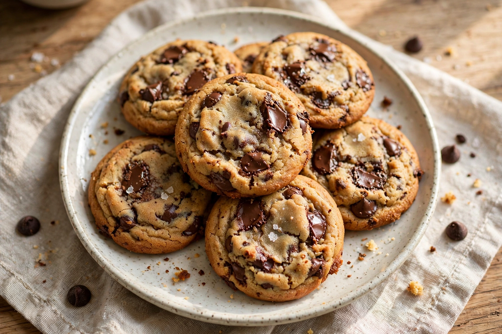

Wikipedia — the free encyclopedia

A cookie is a sweet biscuit or cake, typically small, flat and baked, containing flour, sugar, eggs and a fat such as butter or oil. In most English-speaking countries outside North America the word "biscuit" is used instead; "cookie" comes from the Dutch koekje, "little cake". Cookies may be dropped, pressed, rolled, refrigerated or bar-baked, and flavoured with chocolate chips, nuts, spices or fruit.
Cookies originated as small test bakes used to check oven temperature. Persian bakers made early sweetened cakes by the 7th century; Dutch settlers brought koekjes to New Amsterdam. The chocolate chip cookie was invented by Ruth Graves Wakefield at the Toll House Inn in Massachusetts in the 1930s (about 1938) and became America's favourite; her recipe was printed by Nestlé, whose semi-sweet chips it popularised.
Well-known cookies include Oreos (1912), shortbread, snickerdoodles, macarons, biscotti, gingerbread, fortune cookies and digestive biscuits. Commercial cookies are a major packaged-food industry worldwide.